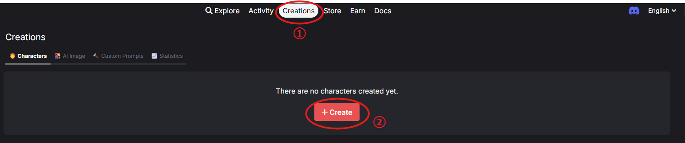

AI角色扮演平台横向比，Caveduck凭什么让创作者愿意长期留下来
从创作者的视角拆解Caveduck在AI角色扮演赛道里的差异化竞争力——激励分成机制、Story付费章节、社区互动三板斧，以及它的门槛和取舍。
如果你在AI角色扮演这个赛道泡过一阵，大概能感觉到最近一两年的格局变化：早期玩家扎堆往无门槛无审核的方向跑，后来大厂下场做合规，现在创作者生态成了各家争夺的核心战场。Caveduck官网就是在这个阶段冒出来的一个——它不是第一个做AI角色对话的，但它是少数几个把创作者收益真金白银给到位的平台之一。
AI角色扮演平台的核心矛盾其实很简单：用户要好玩、角色要多，创作者要动力。早年很多平台靠UGC堆量起来，但创作者留不住——写一套角色设定、调几十轮对话，然后呢？没人给回报就没人再写了。Caveduck的思路是把这个闭环打开：用户花积分和角色对话，创作者按比例分成；更进一步的Story章节功能，让创作者能卖付费剧情，相当于把「写小说」和「AI互动」捏在一起。
差异化一：创作者激励真的能摸到钱
市面上的AI角色扮演平台，对创作者的回馈大致分三档：第一档是纯荣誉体系，点赞数、收藏数、排行榜，拿得出手但不能当饭吃；第二档是平台内消费分成，但比例低得可怜或者有一堆前置条件；Caveduck走的是第三档——只要有用户用你的角色对话，每一轮你都有进账，而且激励直接以积分形式到账，积分可以用来继续玩或者申请提现。
更关键的是它的分成比例透明。GPT-4o模型用户花80积分，创作者拿5积分；Claude 3 Opus用户花250积分，创作者拿20积分。不同模型分成比例不同，但规则公开写死，不玩暗箱。Story付费章节的激励更直接——用户解锁一次付费剧情，创作者固定拿100积分，不管用户用的是GPT-3.5还是最顶级的模型。

这个设计背后的逻辑很清楚：创作者的收益和用户的使用强度直接挂钩，而不是和创作者本人的等级或粉丝数挂钩。一个刚进来的新人，如果运气好做了个爆款角色，照样能拿到实实在在的激励。这种机制催生了大量腰部创作者，而不是只有几个头部大号垄断流量。
差异化二：Story系统把对话变成长剧情
大多数AI角色扮演平台的交互单元就是「角色」——你选一个角色，开一个对话窗口，聊到哪算哪。Caveduck在角色外面套了一层Story壳：一个Story可以有多条Episode（开场白分支），每个Episode里可以写多行Script（剧情脚本），还能给付费章节设门槛。
这一下把「和AI聊聊天」升级成了「体验AI互动小说」。创作者不再需要每一轮对话都靠AI临场发挥，可以提前铺好关键剧情节点、设计好分支走向，用户在对话过程中逐步解锁后续章节。付费Chapter的设定也让创作者有了明确的变现路径——免费章节用来吸引用户，付费章节用来深度体验，类似游戏里的Demo加内购。
Story系统另一个聪明的设计是Episode和角色解耦。同一个角色可以挂多个Episode，每个Episode是不同的开场剧情，相当于给一个角色开了好几条故事线。用户进Story Tab之后可以像选番剧一样挑Episode，创作者也可以持续给同一个角色追加新的Story内容，不用每次都从零开始。
差异化三：社区机制服务创作者而非流量算法
很多AI平台的推荐逻辑是「谁热门推谁」，结果就是头部角色永远在首页，新人根本没有曝光机会。Caveduck的社区设计反而往创作者那边倾斜：关注某个创作者之后，你能在Activity页面看到这个人所有的新角色、Story更新、甚至公告。创作者主页支持写Markdown风格的自我介绍、发公告、展示完整的角色列表。
关注和书签的区分也很有意思：书签收的是具体某个角色，关注收的是创作者这个人。我自己的使用习惯是——碰到某个单角色不错的，先书签；如果翻了这个创作者主页发现他好几个角色都对我胃口，再点关注。这样既不会因为推荐算法错过新人，也不会被大量低质量更新刷屏。
它的门槛和取舍
说了三个好，也得讲讲它不是什么。Caveduck下载渠道很简单，注册完就能进主界面。不过它不是那种「注册完就能随便玩」的平台——积分系统意味着你要么消耗积分对话，要么自己创造内容赚积分。对于只想白嫖玩的用户来说，这个门槛可能有点劝退。
防滥用机制也卡得比较严。Caveduck文档里对哪些行为会触发判定列得很细——平台有AI驱动的检测系统，多账号集中和同一角色对话、批量复制他人角色设定、自己小号刷自己Story的付费章节，这些行为都会触发限制。激励提现被拒是最常见的惩罚，严重一点账号都可能暂时用不了。官方给出的申诉路径是通过ChannelTalk客服，大概1到2个工作日处理——但别等被限了才想起来问，拿不准的操作先查一下规则。
图片审核同样比较严格。角色头像、Story封面、Episode封面上传的时候会过一遍AI过滤，色情暴力版权内容肯定不行，但有时候合法图片也可能被误判。好在有重审入口，真被误判了提交申诉就行。
选购结论
如果你是想认真做AI角色内容的创作者——不管是做几个高质量角色还是想持续输出Story剧情——Caveduck的激励体系和Story系统是目前市面上最实在的选择之一。分成透明、收益直接、社区对创作者友好，这些点加在一起，比那些只给荣誉头衔的平台靠谱得多。
如果你只是偶尔想玩一玩AI对话，不太在意创作者生态，那它可能不是最优解。积分门槛、防滥用规则、图片审核这些设计，在轻量用户眼里反而是负担。去找那些无门槛、纯聊天的平台可能更省心。
再补一句老用户视角的真心话：AI角色扮演这个赛道，最值钱的不是模型有多强，而是有没有人在长期做内容。Caveduck选了一条比较难但比较正的路——让创作者能拿到钱，然后生态才能转起来。这条路走通了，它的护城河比任何单一模型都深；走不通，那也只是众多实验品里多了一个而已。目前社区里关于Caveduck的中文资料在GitHub、Gitee、GitCode三个仓库都同步了，按需查就行。
目前来看，它走在对的方向上。